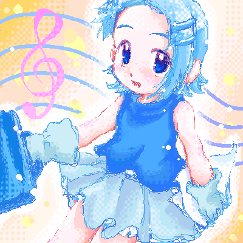
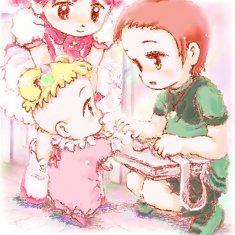
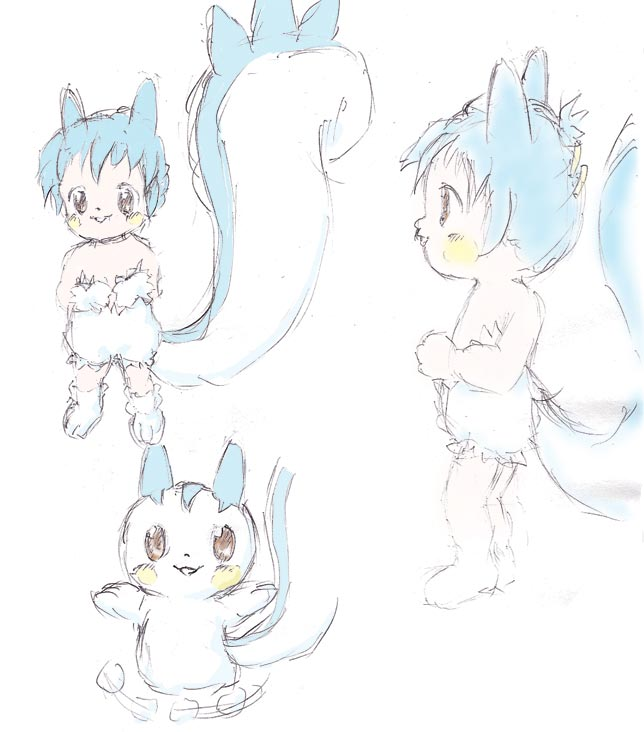

昨日から通信対戦が熱いポケモン、擬人化パチリス＆女主人公絵下書き～
公表する前にちゃんと完成させて…とも思ったのだけど今の自分の気持ちが
めいっぱい出てる気がするので先に載せちゃいます。一時的なものなんだけど
かけがえのない気持ち。今こんな気持ちなんですー！形として残しておきたいんですー！
07年11月に描いた絵
（更新日 07年11月16日FRI.）

オリおジャがくふたんｖ
あいちゃんWEBさんのお絵描き掲示板でその昔
一時期流行ったオリジナルのおジャ魔女です。
発案者さんは由良利＃さん(今はサイトを閉じてるようで)
こんな素晴らしい子をデザインして下さってありがとう！
（って自分のキャラでもなしに…^^;）
たしか“恋の劇薬”とか設定が付いて、みなさん
そんな絵を描かれていたように思います。
この子を使ったオリジナルのお話を描いてみたい、
と思っています。三次創作？で「おジャ魔女がくふ」もしくは
「空色の魔女見習い」。
自分の幼少の思いなどを胸に、泣いたり笑ったり
元気一杯に、でも内面は裏黒く切なくドロドロしていて…(汗
以前の更新で言った作品達を完成できたらこのお話にとりかかりたいと思っています。
おそらく超ローペースになると思いますがどうか応援してくださいｖ
00年9月に描いた絵
（更新日 07年10月5日FRI.）
ものすごくぶりにじぶんらしさ全開な絵を描けた。
おジャ魔女がくふたん。元がいいから可愛い？(自分で言うな；
自分はどうやら、硬め(HB)のシャーペン(0.3)でひととおり描いた後
同じ硬さのシャーペン＆消しゴムで修整しながら筆圧強めで塗り足していくように
線を引く、という描き方が昔からの基本みたい。
一時期は筆圧が強くなりすぎて描いても描いても辛い、指痛い、となってしまった事も
（Dear^2 HAZUKI.2 plot1というコピー誌を描いていた頃はその極地で
ガリガリ描きすぎるせいで頭身が低くなってるのが自分でも分からず
すごく苦悩してました）
今度本を作るときは下絵を配置中心に修整しながら描いていって
上の描き方でシャーペントレス、パソにスキャンして入れて一番濃い部分が
黒になるようにそして濃淡が生きるようにトーンカーブ調節、
基本350dpiでトーンを最終的に入れるときは600dpiの15線～70線ﾊｰﾌﾄｰﾝｽｸﾘｰﾝ化して
画像合成、とやるのが良さそう。というかやってみよう。
07年10月に描いた絵
（更新日 07年10月5日FRI.）
今ハマってるゲーム、ﾌｧﾝﾅﾙﾌｧﾝﾀｼﾞｰｸﾘｽﾀﾙｸﾛﾆｸﾙﾘﾝｸﾞｵﾌﾞﾌｪｲﾄ(長い；
FFCCRoFです。絵はそのクラヴァット(剣士さん)族の女の子。
武器や服装の見た目が装備で変化して可愛いのです。
好みは絵のように頭装備は無し(もしくは目部分の覆面防具)で
重鎧を着せて剣をぶんまわす。そんなイメージで楽しんでます。
兜かぶっちゃうと顔も見えなくロングの髪もまとめちゃって可愛くないのです＞＜
最終的にはつらくなりそうなのでその時は臨機応変に着脱…ってなるのかな。
この絵、最初はなんだかなぁな絵だったんですが
線を重ねながら修整していったら結構自分らしい絵に。
（最初は全部、絵右上くらいの線の濃さで自分でイマイチな絵でした）
そしてこのゲーム、多人数でのマルチプレイが楽しいようなので
どなたかDS持ってる方！一緒にやりましょう～！
07年10月に描いた絵
（更新日 07年10月5日FRI.）
RMC姫ちゃんのリボン(全10巻)を
読み返してみて
その表現の自由さ(絵画的な意味で)に
感銘を受けて
ちょっと漫画っぽい構図で一枚…ｖ
知人に、1p漫画を描いてみるといい、
と言われていたので
セリフはあらねど、それっぽくなったかな…？
というカンジで。
（後に清書(ｸﾘﾝﾅｯﾌﾟ、効果入れ)予定）
07年6月に描いた絵
（更新日 07年6月29日FRI.）

も～っと！どれみ(３年目)20話「はじめて会うクラスメイト」
同38話「学校へ行きたい！」
同45話「みんなで！メリークリスマス」
見返しました。序盤のかよちゃんの一言一言の反応
ぐさりとささる記憶甦るシーン
最後はご都合主義で見てられない、という方も
その感じ方もとても愛おしいです
おジャ魔女どれみは見るとちょっとだけ優しくなれる
そんな気のするアニメです。
DVDレンタルはどこもまだやってると思うので(多分)
ちょっと手に取ってあらすじを見て
これは、と思うものを見てみて欲しいです。
ten-iso'n tokoさんでの当時の感想書き込み
てんいそさんと連絡がつける手段が無いので
無断掲載させてもらいます。
(不都合があればページ一番下のメールから言って下さい)
02年1月に描いた絵
（更新日 07年5月2日WED.）

ちょっとYATのマロンちゃん風味に擬人化～
2/8、退院日でもあったポケモンアニメパチリス初登場回
冒頭、じーっとおたがい見つめ合って
かーわいい～！って、ホントに好きな子見つけたっ！って感じのやりとり
でも本当に自分のこと好きなのかはっきりと分からなくて
そっけないようなわがままむじゃき、パチリス
アニメで絶好調でたまりません！
07年2月に描いた絵
（更新日 07年2月10日SAT.）
{kind=link}
{kind=link}
{kind=link}
{kind=link}